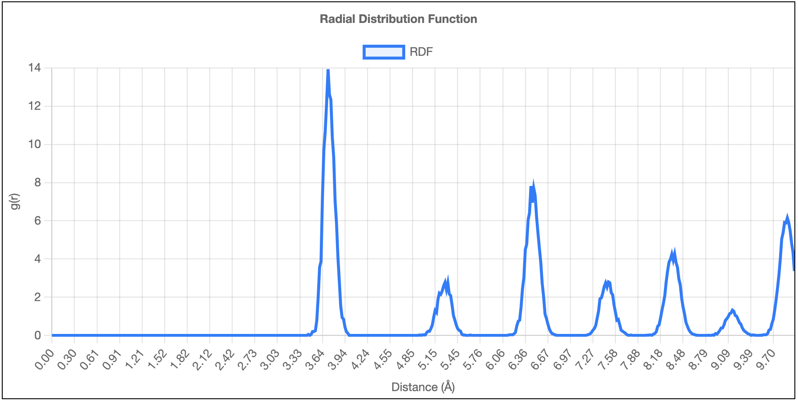
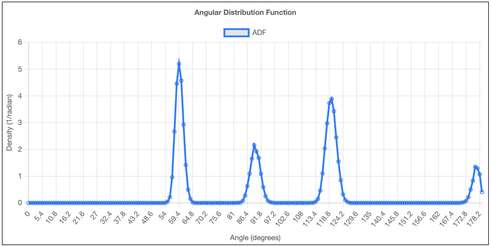
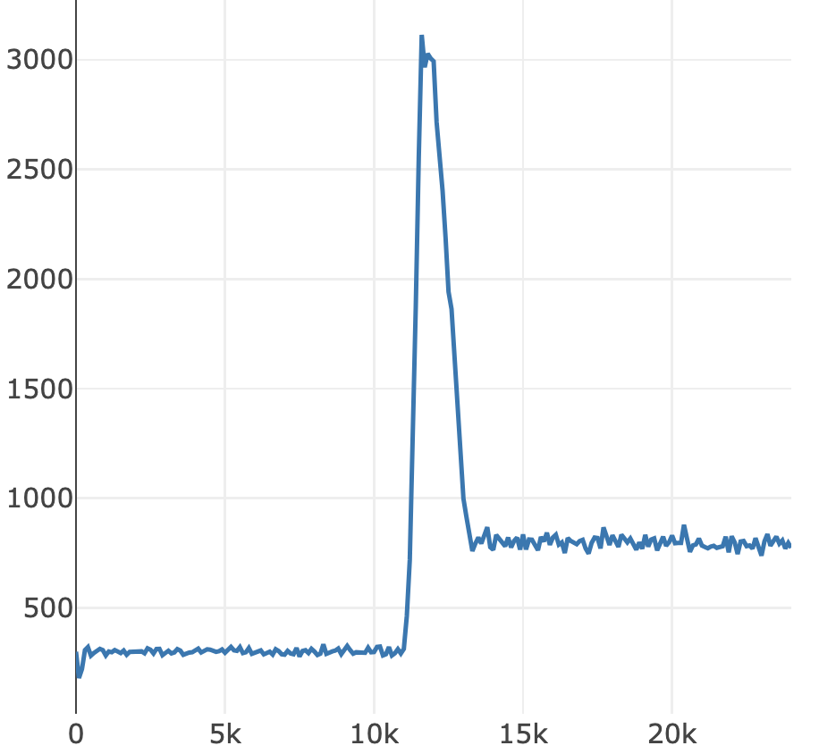

What's Molecular Dynamics Simulation ?
Analysis of Molecular Dynamics Simulation
動径分布関数, RDF (: Radial Distribution Function)
- ある一つの原子に注目したとき、他の原子がどのくらいの「距離」にどれくらいの確率で存在するかを示したグラフ
- 物質の「短距離」から「長距離」にわたる構造の規則性（秩序）を評価

角度分布関数, ADF (: Angular Distribution Function)
- ある一つの原子と、その最も近くにある2つの原子を選んだとき、これら3つの原子が作る「角度」が、どのくらいの確率で現れるかを示したグラフ
- 原子の「短距離」における配置の特徴、つまり局所的な構造を評価

ログ, Log
- 系の物理量における時間変化を示したグラフ
- 系の温度、圧力、体積、密度の時間発展を追跡

トラジェクトリー, Trajectory
- 分子動力学シミュレーションの結果として生成される座標や速度の時系列データの総称
- 複数のタイムステップにおけるスナップショットが記録されている